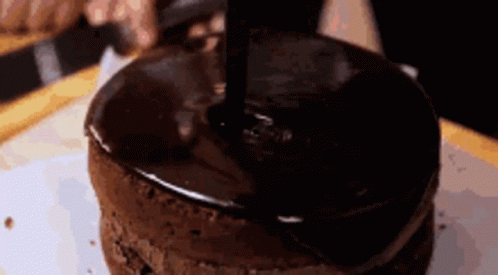

Chocolate Cake

Chocolate Cake:
Chocolate cake or chocolate gâteau is a
cake flavored with melted chocolate, cocoa powder, or both.
INGREDIENTS
- 1 cup cocoa powder
- 2 tablespoons instant coffee
- 1 cup hot water
- 1 cup evaporated milk
- 3 cups flour
- 1 teaspoon baking powder
- 2 teaspoons baking soda
- 1 cup butter
- 2 1/2 cups sugar
- 4 eggs
- 1 teaspoon vanilla
Chocolate Fudge Frosting
- 4 squares unsweetened chocolate
- 2 cans condensed milk
- 1/4 cup butter
STEPS
- Preheat oven to 350 degrees Farenheit. Grease and line a 13 x 9 x 2-inch rectangular pan. Set aside.
- Dissolve cocoa and coffee in hot water. Add evaporated milk then set aside. Combine flour, baking powder and baking soda. Set aside.
- In a bowl, cream butter and sugar until light and fluffy. Add eggs, one at a time, beating well after each addition. Stir in vanilla. Add the flour and liquid ingredients alternately into the creamed mixture. Pour into prepared pan and bake for 45 minutes or until done.
- Prepare frosting by combining all the ingredients in a saucepan or double boiler. Cook until thick while stirring constantly. Frost top and sides of cake.
Serves: 24